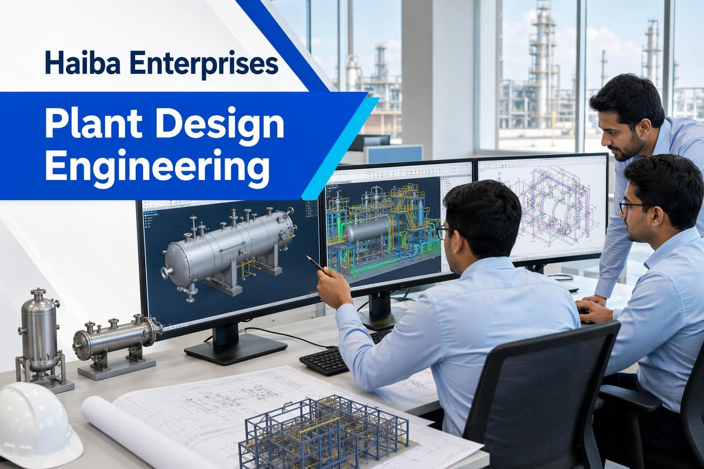

01
Understand
Review the project brief, available data, constraints, interfaces, and required deliverables.
Design and Engineering
Haiba provides engineering design and drawings for pressure vessels, heat exchangers, piping, tanks, and industrial structures.

Scope
01
Review the project brief, available data, constraints, interfaces, and required deliverables.
02
Develop fit-for-purpose design outputs with clear assumptions and coordination points.
03
Support technical review and revisions so the design can move to the next project stage.
Share your equipment, piping, modification, or turnaround requirement with the Haiba team.
Talk to HaibaEngineering scope
Good plant design connects process requirements, equipment data, materials, access, maintainability, and construction constraints. Haiba develops practical engineering outputs that help project teams review options, coordinate interfaces, and make informed decisions.
Our support can begin with an early concept, an existing-facility modification, or a defined package of drawings. We work from the information available and identify assumptions, missing inputs, and review points clearly.
01 | Define
We review the project brief, existing drawings, equipment data, constraints, interfaces, and required outputs.
02 | Develop
We develop fit-for-purpose design information with clear assumptions and practical coordination points.
03 | Review
We support technical review, revisions, and handover so the design can progress with fewer avoidable gaps.
Engineering scope
Good plant design connects process requirements, equipment data, materials, access, maintainability, and construction constraints. Haiba develops practical engineering outputs that help project teams review options, coordinate interfaces, and make informed decisions.
Our support can begin with an early concept, an existing-facility modification, or a defined package of drawings. We work from the information available and identify assumptions, missing inputs, and review points clearly.
01 | Define
Review the project brief, existing drawings, equipment data, constraints, interfaces, and required outputs.
02 | Develop
Develop fit-for-purpose design information with clear assumptions and practical coordination points.
03 | Review
Support technical review, revisions, and handover so the design can progress with fewer avoidable gaps.